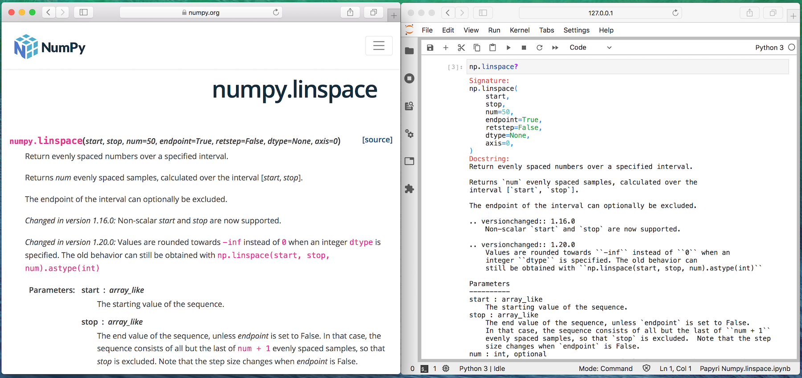
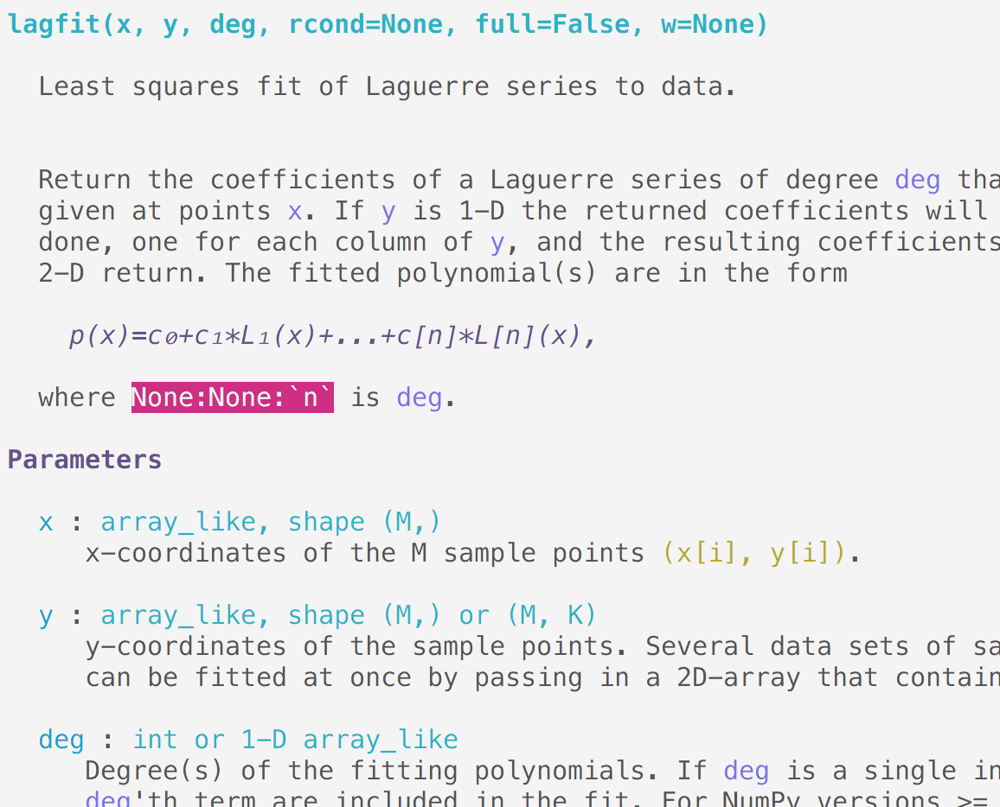
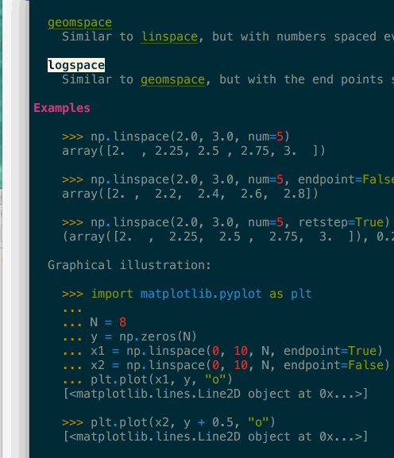
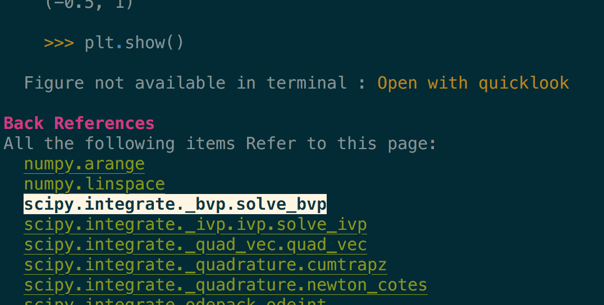

Jupyter Notebook first release was 8 years ago – under the IPython Notebook name at the time. Even if notebooks were not invented by Jupyter; they were definitely democratized by it. Being Web powered allowed development of many changes in the Datascience world. Objects now often expose rich representation; from Pandas dataframes with as html tables, to more recent Scikit-learn model.
Today I want to look into a topic that has not evolved much since, and I believe could use an upgrade. Accessing interactive Documentation when in a Jupyter session, and what it could become. At the end I'll link to my current prototype if you are adventurous.
The current limitation for users
The current documentation of IPython and Jupyter come in a few forms, but mostly
have the same limitation.
The typical way to reach for help is to use the ? operator. Depending on
the frontend you are using it will bring a pager, or a panel that will display
some information about the current object.
It can show some information about the current object (signature, file, sub/super classes) and the raw DocString of the object.
You can scroll around but that's about it whether in terminal or Notebooks.
Compare it to the same documentation on the NumPy website.

On the left is the documentation for NumPy when visiting the NumPy website. Let's
call that "rendered documentation". On the right what you get in Jupyter Lab or
in the IPython or regular Python REPL, let's cal that "help documentation" since
it is typically reached via identifier? or help(identifier)
Compared to rendered documentation, the help documentation is:
- Hard to read,
- Has no navigation,
- RST Directives have not been interpreted,
- No inline graphs, no rendered math.
There is also no access to non-docstring based documentation, no narrative, no tutorials, no image gallery or examples, no search, no syntax highlighting, no way to interact or modify documentation to test effects of parameters.
Limitation for authors
Due to Jupyter and IPython limitations to display documentation I believe authors are often contained to document functions.
Syntax in docstrings is often kept simple for readability, this first version is often preferred:
You can use ``np.einsum('i->', a)`` ...
In the longer form, which makes the reference into a link when viewing rendered documentation, it is difficult to read when shown as help documentation:
You can use :py:func:`np.einsum('i->', a) <numpy.einsum>` ...
This also leads to long discussions about which syntax to use in advanced areas, like formulas in Sympy's docstrings.
Many projects have to implement dynamic docstrings; for example to include all
the parameters a function or class would pass down using **kwargs (search
the matplotlib source code for _kwdoc for example, or look at the pandas.DataFrame implementation).
This can make it relatively difficult for authors and contributors to properly maintain and provide comprehensive docs.
I'm not sure I can completely predict all the side effects this has on how library maintainers write docs; but I believe there is also a strong opportunity for a tool to help there. See for example vélin which attempts to auto reformat and fix common NumPyDoc's format mistakes and typos – but that's a subject of a future post.
Stuck between a Rock and a Hard place
While Sphinx and related projects are great at offering hosted HTML documentation, extensive usage of those makes interactive documentation harder to consume.
While it is possible to run Sphinx on the fly when rendering docstrings, most Sphinx features only work when building a full project, with the proper configuration and extension, and can be computationally intensive. This makes running Sphinx locally impractical.
Hosted websites often may not reflect the locally installed version of the libraries and require careful linking, deprecation and narrative around platform or version specific features.
This is fixable
For the past few months I've been working on rewriting how IPython (and hence Jupyter) can display documentation. It works both in terminal (IPython) and browser context (notebook, JupyterLab, Spyder) with proper rendering, and currently understands most directives; it could be customized to understand any new ones:

Above is the (terminal) documentation of scipy.polynomial.lagfit, see how the
single backticks are properly understood and refer to known parameters, it
detected that `n` is incorrect as it should have double backticks; notice
the rendering of the math even in terminal.
For that matter technically this does not care as to whether the DocString is written in RST or Markdown; though I need to implement the latter part. I believe though that some maintainers would be quite happy to use Markdown, the syntax of which more users are familiar with.

It supports navigation – here in a terminal – where clicking or pressing enter on a link would bring you to the target page. In the above gif you can see that many tokens of the code example are also automatically type-inferred (thanks Jedi), and can also be clicked on to navigate to their corresponding page.

Images are included, even in the terminal when they are not inline but replaced by
a button to open them in your preferred viewer (see the Open with quicklook in
the above screenshot).
The future
I'm working on a number of other features, in particular:
- rendering of narrative docs – for which I have a prototype,
- automatic indexing of all the figures and plots – working but slow right now,
- proper cross-library referencing and indexing without the need for intersphinx.
For example, it is possible from the
numpy.linspacepage to see all pages that reference it, or usenumpy.linspacein their example section (see previous image).
And many others, like showing a graph of the local references between functions, search, and preference configurability. I think this could also support many other desirable features, like user preferences (hide/show type annotation, deprecated directives, and custom color/syntax highlighting) - though I haven't started working on these. I do have some ideas on how this could be used to provide translations as well.
Right now, is it not as fast and efficient as I would like to – though it's faster than running Sphinx on the fly – but requires some ahead of time processing. And it crashes in many places; it can render most of the documentation of SciPy, NumPy, xarray, IPython and scikit-image.
I encourage you to think about what features you are missing when using documentation from within Jupyter and let me know. I hope this could become a nice addition to Sphinx when consulting documentation from within Jupyter.
For now I've submitted a Letter of intent to CZI EOSS 4 in an attempt to get some of that work funded to land in IPython, and if you have any interest in contributing or want something like that for your library, feel free to reach out.
You can find the repository on my GitHub account, it's still in pre-alpha stage. It is still quite unstable with too many hard coded values to my taste, and needs some polish to be considered usable for production. I've focused my effort for now mostly on terminal rendering – a Jupyter notebook or JupyterLab extension would be welcome. So if you are adventurous and like to work from the cutting (or even bleeding) edge, please feel free to try it out and open issues/pull request.
It also needs to be better documented (pun intended), I'm hoping to use papyri itself to document papyri; but it needs to be a bit more mature for that.
Stay tuned for more news, I'll try to explain how it works in more detail in a follow-up post, and discuss some of the advantages (and drawbacks) this project has.